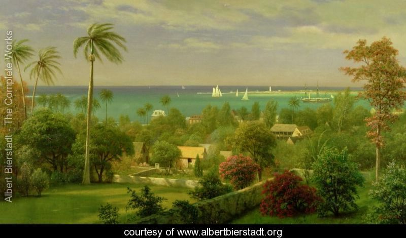

Truly all is remarkable and a wellspring of amazement and wonder. Man is so fortunate to dwell in this American Garden of Eden."
-- Albert Bierstadt

"Christ is one with His creatures and so man must treat his fellow creatures as Christ would. The continual slaughter of native species must be halted before all is lost."
-- Albert Bierstadt
"The magnificent beauty of the natural world is a manifestation of the mysterious natural laws that will be forever obscured from us."
-- Albert Bierstadt